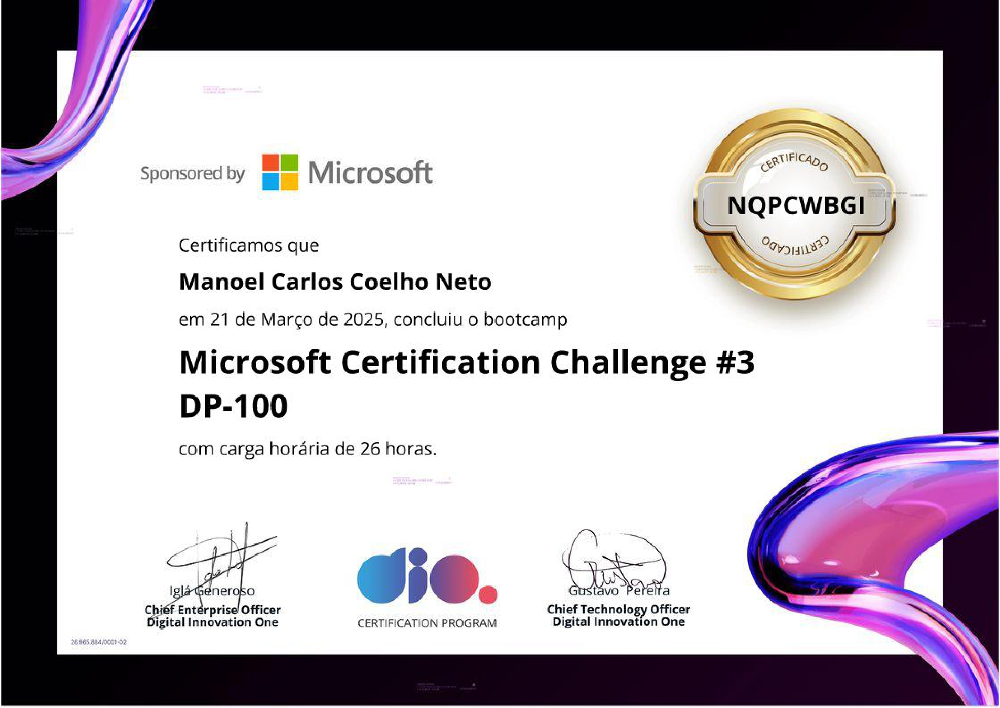
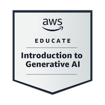

Manoel Neto
Profissional de tecnologia com experiência em desenvolvimento Front-End (HTML, CSS e JavaScript) e automação com Python, atuando também em suporte técnico, qualidade de software (QA), análise de dados e infraestrutura de TI, com vivência em ambientes cloud básicos e testes manuais e automatizados.
Analista de Tecnologia Jr | QA • Suporte • DevOps Jr • Dados | Python • Cloud • Qualidade de Software
Pará, BR
manoelccoelho@gmail.com
(93) 99214-0503
Hard Skills
IA Generativa
Python
Git / GitHub
HTML / CSS / JavaScript
Flutter
Docker
Competências Técnicas
🔹 Qualidade de Software / QA
Testes Manuais • Testes Automatizados • Elaboração de Casos de Teste • Validação de Software • Python aplicado a testes • Garantia da Qualidade (QA)
🔹 Suporte Técnico & Infraestrutura
Help Desk N1 • Suporte ao Usuário • Windows e Office • Backup em Nuvem • Infraestrutura Básica • Apoio a Ambientes de Servidores
🔹 DevOps / Cloud (nível júnior)
Python • Git • Cloud Computing (Azure e AWS – básico) • Automação de Tarefas • Conceitos de CI/CD • Sustentação de Ambientes
🔹 Dados / BI (nível júnior)
Análise de Dados • Indicadores e KPIs • Visualização de Dados • Excel Analítico • Apoio à Tomada de Decisão • Dados Aplicados a Negócios
Competências Técnicas (SEM BARRA, EM BLOCOS)
- IA Generativa
- Python
- Git
- GitHub
- HTML
- CSS
- JavaScript
- Flutter
- Docker
- Testes Manuais
- Testes Automatizados
- Qualidade de Software
- QA
- Help Desk N1
- Suporte ao Usuário
- Infraestrutura Básica
- Backup em Nuvem
- Cloud Computing
- Azure (básico)
- AWS (básico)
- Automação de Tarefas
- CI/CD
- Análise de Dados
- KPIs
- Visualização de Dados
- Excel Analítico
Soft Skills
- Pensamento Crítico
- Adaptabilidade
- Resiliência
- Comunicação Eficaz
- Aprendizagem Ativa
- Autonomia
- Iniciativa
- Gestão de projetos
- Resolução de problemas
- Liderança
- Trabalho em equipe
- Visão de Negócio
Idiomas
Português - Nativo
Espanhol - Básico
Inglês - Técnico
Certificados



VER MAIS
Experiência Profissional
Técnico de Suporte em TI / Sistemas ERP
Sonho do Artesão
Set 2024 – Atual
- Suporte técnico a sistemas ERP (Uniplus e Olist), auxiliando usuários na operação, configuração e resolução de incidentes.
- Atendimento de suporte em TI remoto e presencial, com troubleshooting de hardware, software e rede.
- Manutenção da infraestrutura de rede local, garantindo conectividade, estabilidade e segurança básica.
- Suporte aos processos de faturamento e emissão de notas, assegurando integridade dos dados e disponibilidade dos sistemas.
- Colaboração com equipes operacionais para melhoria do uso dos sistemas, confiabilidade e continuidade dos serviços.
Suporte Help Desk / TI
Servcom Tecnologia – www.servcom.com.br
Mar 2024 – Set 2024
- Suporte técnico de nível 1 (N1) em demandas de tecnologia, com atendimento a usuários e resolução de incidentes.
- Apoio na configuração, conferência e manutenção de backup em nuvem, garantindo segurança e disponibilidade das informações.
- Suporte na configuração e manutenção de espelhamento de servidores, contribuindo para a continuidade operacional.
- Apoio na instalação e configuração de bancos de dados, em colaboração com a equipe técnica.
- Desenvolvimento de soluções web e automações com IA generativa, utilizando Python e tecnologias Front-End, com foco na otimização de processos.
Analista de E-commerce / Plataformas Digitais
Porão do Alien
Jun 2017 – Dez 2023
- Gestão e otimização de plataforma de e-commerce, com foco em performance, estabilidade e experiência do usuário.
- Análise de métricas e indicadores de desempenho utilizando Google Analytics, apoiando decisões operacionais e estratégicas.
- Administração de catálogo de produtos, precificação e fluxo de vendas, garantindo consistência e atualização dos dados.
- Implementação de melhorias técnicas relacionadas a SEO e performance da plataforma, visando aumento de tráfego qualificado.
- Atendimento ao cliente e resolução de problemas técnicos relacionados ao funcionamento da loja virtual.
Educação
Bootcamp AI for Tech - GitHub Copilot | Microsoft
✓ Concluído
Fundamentos de IA Generativa com Bedrock | Nexa
✓ Concluído
Análise e Desenvolvimento de Sistemas | Unifatecie
Cursando - 1º Semestre
Ciência de Dados com Python 2025 | Santander
Ago 2025 - Cursando
Machine Learning e GenAI na Prática | Nexa
Nov 2025 - Cursando
Análise de Dados com Grafos | Neo4J
Nov 2025 - Cursando
GenAI & Dados | Bradesco
Dez 2025 - Cursando
Imersão Digital Mobile | Santander
Jun 2025 - Cursando
Excel com Inteligência Artificial | Santander
Out 2025 - Cursando
EducaIA | Santander
Set 2025 - Cursando
Engajamento Comunitário
Facilitador Google Cloud Arcade | Google Cloud & SoulCode Academy
2025 - Cursando
Facilitador oficial do Google Cloud Arcade, compartilhando conhecimento em cloud computing, machine learning e arquitetura de soluções Google Cloud Platform com a comunidade tech.
Cibersegurança | Hackers do Bem (RNP/SENAI-SP/Softex)
2025 - Cursando
Formação intensiva em ethical hacking e segurança ofensiva, aplicando técnicas avançadas de análise de vulnerabilidades e resposta a incidentes em ambientes reais.
Projetos em Destaque

Master Nerd - Toolkit Arcade Retrô para o PC Moderno
Toolkit completo de jogos arcade retrô com emulação otimizada para PCs modernos.
Ver Projeto